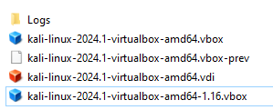
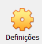

Sistemas Operativos
Neste modulo, os objetivos são, conseguir instalar e configurar alguns sistemas operativos. para atingir este objetivo, aprendi sobre máquinas virtuais e external boot. entre outros
Para fazer este módulo, eu fiz uma Máquina Virtual com o sistema operativo Kali Linux. para criar esta maquina virtual, instalei o virual box da oracle e o .iso do Kali Linux.
Como Instalar?
Entra nos sites acima, e instala a versão compativel com a tua máquina e com os teus intereses. no caso do Kali basta instalar a versão para máquinas virtuais e clicar duas vezes, que já configura tudo e fica pronto para utilizar!
Como Configurar?
Caso queiras mudar a configuração padrão, basta clicar em definições e mudar oque pretende!
